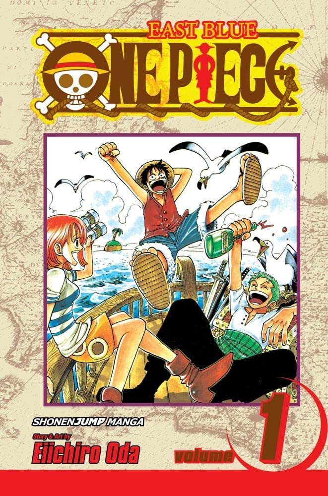

Em One Piece, conhecemos as aventuras de Monkey D. Luffy e sua equipe de piratas, navegando por oceanos fantásticos e ilhas exóticas em busca do maior tesouro já deixado pelo lendário Gold Roger. Luffy acredita na lenda do tesouro e sai em uma busca extraordinária na esperança de proclamar para si o título de Rei dos Piratas. Logo no início da jornada, Luffy conhece Roronoa Zoro, um espadachim musculoso que se torna o seu braço direito durante a expedição. Eles são acompanhados pela jovem ladra Nami, o atirador mentiroso Usopp, e Sanji, o chefe de cozinha da embarcação. Após adquirirem um navio, à medida que avançam mar a dentro e vivem novas aventuras, outros membros passam a integrar a tripulação de piratas, como o médico Tony Tony Chopper e a arqueóloga Nico Robin. A equipe comandada por Luffy enfrenta todo tipo de desafio, desde piratas como eles, até organizações criminosas, revolucionários, agentes secretos e soldados. (Créditos:AdoroCinema)